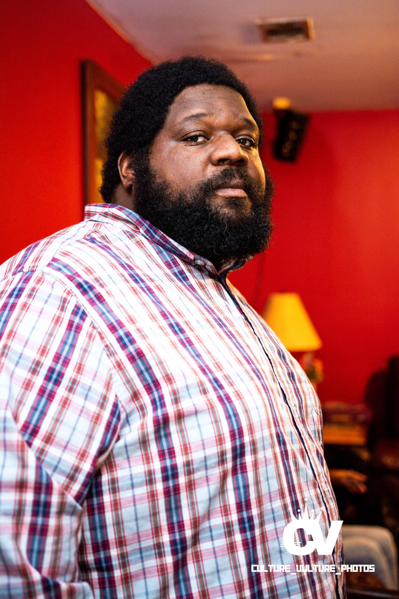

Cornelius Toole

SUMMARY
Authorized to work in the US for any employer. Capable in IT support, videography, and web development, experienced in assisting users in resolving issues with computer systems, mobile devices, and peripheral equipment. Knowledgeable about usability and security concerns, comfortable working independently to effectively investigate and troubleshoot problems.
EDUCATION
- Bennett High school (1999-2003)
WORK EXPERIENCE
- freelance videographer
- I work as a freelance videographer for clients such as Diamond Championship Wrestling, Ziers PushCinema, UBH Media, and Sturdy Podcast for podcasting. My demo reel includes a showcase of my work, along with my certifications.
- Security
- Allied Universal/ Mar 2021 to 2023
- Provide customer service to our clients by carrying out safety and security procedures, site-specific policies and when appropriate, emergency response activities
-
Respond to incidents and critical situations in a calm, problem solving manner
- Conduct regular and random patrols around the business and perimeter
Greyhound Line Inc 2015-2020
- Operate bus routes in the southeast US as assigned, and as needed on call for other assignments nationwide
- Manage 35 to 40 passengers per trip, including ensuring the safety and security of passengers and cargo
- Deliver busses to various areas of the country and drive chartered routes, including military charters, as needed
Certifications
-
Adobe Premiere Pro CC - Essentials Training
- Google Technical Support Fundamentals
Click here to see my video editing demo reel.